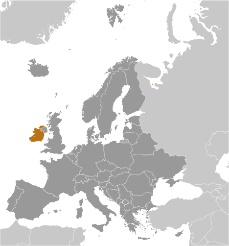
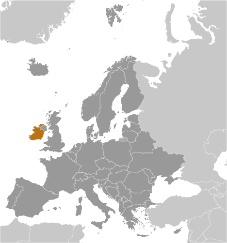

-
Introduction :: Ireland
-
Background:
Celtic tribes arrived on the island between 600 and 150 B.C. Invasions by Norsemen that began in the late 8th century were finally ended when King Brian BORU defeated the Danes in 1014. Norman invasions began in the 12th century and set off more than seven centuries of Anglo-Irish struggle marked by fierce rebellions and harsh repressions. The Irish famine of the mid-19th century was responsible for a drop in the island's population by more than one quarter through starvation, disease, and emigration. For more than a century afterward, the population of the island continued to fall only to begin growing again in the 1960s. Over the last 50 years, Ireland's high birthrate has made it demographically one of the youngest populations in the EU.
The modern Irish state traces its origins to the failed 1916 Easter Monday Uprising that touched off several years of guerrilla warfare resulting in independence from the UK in 1921 for 26 southern counties; six northern (Ulster) counties remained part of the UK. Deep sectarian divides between the Catholic and Protestant populations and systemic discrimination in Northern Ireland erupted into years of violence known as the "Troubles" that began in the 1960s. The Government of Ireland was part of a process along with the UK and US Governments that helped broker the Good Friday Agreement in Northern Ireland in 1998. This initiated a new phase of cooperation between the Irish and British Governments. Ireland was neutral in World War II and continues its policy of military neutrality. Ireland joined the European Community in 1973 and the euro-zone currency union in 1999. The economic boom years of the Celtic Tiger (1995-2007) saw rapid economic growth, which came to an abrupt end in 2008 with the meltdown of the Irish banking system. Today the economy is recovering, fueled by large and growing foreign direct investment, especially from US multi-nationals.
-
Geography :: Ireland
-
Location:Western Europe, occupying five-sixths of the island of Ireland in the North Atlantic Ocean, west of Great BritainGeographic coordinates:53 00 N, 8 00 WMap references:EuropeArea:total: 70,273 sq kmland: 68,883 sq kmwater: 1,390 sq kmcountry comparison to the world: 121Area - comparative:slightly larger than West VirginiaLand boundaries:total: 443 kmborder countries (1): UK 443 kmCoastline:1,448 kmMaritime claims:territorial sea: 12 nmexclusive fishing zone: 200 nmClimate:temperate maritime; modified by North Atlantic Current; mild winters, cool summers; consistently humid; overcast about half the timeTerrain:mostly flat to rolling interior plain surrounded by rugged hills and low mountains; sea cliffs on west coastElevation:mean elevation: 118 melevation extremes: 0 m lowest point: Atlantic Ocean1041 highest point: CarrauntoohilNatural resources:natural gas, peat, copper, lead, zinc, silver, barite, gypsum, limestone, dolomiteLand use:agricultural land: 66.1% (2011 est.)arable land: 15.4% (2011 est.) / permanent crops: 0% (2011 est.) / permanent pasture: 50.7% (2011 est.)forest: 10.9% (2011 est.)other: 23% (2011 est.)Irrigated land:0 sq km (2012)Population distribution:population distribution is weighted to the eastern side of the island, with the largest concentration being in and around Dublin; populations in the west are small due to mountainous land, poorer soil, lack of good transport routes, and fewer job opportunitiesNatural hazards:rare extreme weather eventsEnvironment - current issues:water pollution, especially of lakes, from agricultural runoff; acid rain kills plants, destroys soil fertility, and contributes to deforestationEnvironment - international agreements:party to: Air Pollution, Air Pollution-Nitrogen Oxides, Air Pollution-Sulfur 94, Biodiversity, Climate Change, Climate Change-Kyoto Protocol, Desertification, Endangered Species, Environmental Modification, Hazardous Wastes, Law of the Sea, Marine Dumping, Ozone Layer Protection, Ship Pollution, Tropical Timber 83, Tropical Timber 94, Wetlands, Whalingsigned, but not ratified: Air Pollution-Persistent Organic Pollutants, Marine Life ConservationGeography - note:strategic location on major air and sea routes between North America and northern Europe; over 40% of the population resides within 100 km of Dublin
-
People and Society :: Ireland
-
Population:5,068,050 (July 2018 est.)country comparison to the world: 121Nationality:noun: Irishman(men), Irishwoman(women), Irish (collective plural)adjective: IrishEthnic groups:Irish 82.2%, Irish travelers 0.7%, other white 9.5%, Asian 2.1%, black 1.4%, other 1.5%, unspecified 2.6% (2016 est.)Languages:English (official, the language generally used), Irish (Gaelic or Gaeilge) (official, spoken by approximately 39.8% of the population as of 2016; mainly spoken in areas along Ireland's western coast known as gaeltachtai, which are officially recognized regions where Irish is the predominant language)Religions:Roman Catholic 78.3%, Church of Ireland 2.7%, other Christian 1.6%, Orthodox 1.3%, Muslim 1.3%, other 2.4%, none 9.8%, unspecified 2.6% (2016 est.)Age structure:0-14 years: 21.37% (male 554,110 /female 529,067)15-24 years: 11.92% (male 306,052 /female 297,890)25-54 years: 42.86% (male 1,091,495 /female 1,080,594)55-64 years: 10.53% (male 267,255 /female 266,438)65 years and over: 13.32% (male 312,694 /female 362,455) (2018 est.)population pyramid:
 The World Factbook Field Image ModalEurope :: Ireland Print
The World Factbook Field Image ModalEurope :: Ireland Print Image DescriptionThis is the population pyramid for Ireland. A population pyramid illustrates the age and sex structure of a country's population and may provide insights about political and social stability, as well as economic development. The population is distributed along the horizontal axis, with males shown on the left and females on the right. The male and female populations are broken down into 5-year age groups represented as horizontal bars along the vertical axis, with the youngest age groups at the bottom and the oldest at the top. The shape of the population pyramid gradually evolves over time based on fertility, mortality, and international migration trends.
Image DescriptionThis is the population pyramid for Ireland. A population pyramid illustrates the age and sex structure of a country's population and may provide insights about political and social stability, as well as economic development. The population is distributed along the horizontal axis, with males shown on the left and females on the right. The male and female populations are broken down into 5-year age groups represented as horizontal bars along the vertical axis, with the youngest age groups at the bottom and the oldest at the top. The shape of the population pyramid gradually evolves over time based on fertility, mortality, and international migration trends.
For additional information, please see the entry for Population pyramid on the Definitions and Notes page under the References tab.Dependency ratios:total dependency ratio: 53.8 (2015 est.)youth dependency ratio: 33.4 (2015 est.)elderly dependency ratio: 20.3 (2015 est.)potential support ratio: 4.9 (2015 est.)Median age:total: 37.1 yearsmale: 36.8 yearsfemale: 37.5 years (2018 est.)country comparison to the world: 70Population growth rate:1.11% (2018 est.)country comparison to the world: 98Birth rate:13.8 births/1,000 population (2018 est.)country comparison to the world: 137Death rate:6.6 deaths/1,000 population (2018 est.)country comparison to the world: 140Net migration rate:4 migrant(s)/1,000 population (2017 est.)country comparison to the world: 28Population distribution:population distribution is weighted to the eastern side of the island, with the largest concentration being in and around Dublin; populations in the west are small due to mountainous land, poorer soil, lack of good transport routes, and fewer job opportunitiesUrbanization:urban population: 63.2% of total population (2018)rate of urbanization: 1.14% annual rate of change (2015-20 est.)Major urban areas - population:1.201 million DUBLIN (capital) (2018)Sex ratio:at birth: 1.06 male(s)/female (2017 est.)0-14 years: 1.05 male(s)/female (2017 est.)15-24 years: 1.03 male(s)/female (2017 est.)25-54 years: 1.01 male(s)/female (2017 est.)55-64 years: 1 male(s)/female (2017 est.)65 years and over: 0.86 male(s)/female (2017 est.)total population: 1 male(s)/female (2017 est.)Mother's mean age at first birth:30.7 years (2015 est.)Maternal mortality rate:8 deaths/100,000 live births (2015 est.)country comparison to the world: 158Infant mortality rate:total: 3.6 deaths/1,000 live births (2018 est.)male: 4 deaths/1,000 live births (2018 est.)female: 3.2 deaths/1,000 live births (2018 est.)country comparison to the world: 197Life expectancy at birth:total population: 81 years (2018 est.)male: 78.7 years (2018 est.)female: 83.5 years (2018 est.)country comparison to the world: 35Total fertility rate:1.96 children born/woman (2018 est.)country comparison to the world: 125Health expenditures:7.8% of GDP (2014)country comparison to the world: 60Physicians density:2.96 physicians/1,000 population (2016)Hospital bed density:2.8 beds/1,000 population (2013)Drinking water source:improved: urban: 97.9% of populationrural: 97.8% of populationtotal: 97.9% of populationunimproved: urban: 2.1% of populationrural: 2.2% of populationtotal: 2.1% of population (2015 est.)Sanitation facility access:improved: urban: 89.1% of population (2015 est.)rural: 92.9% of population (2015 est.)total: 90.5% of population (2015 est.)unimproved: urban: 10.9% of population (2015 est.)rural: 7.1% of population (2015 est.)total: 9.5% of population (2015 est.)HIV/AIDS - adult prevalence rate:0.2% (2017 est.)country comparison to the world: 95HIV/AIDS - people living with HIV/AIDS:7,200 (2017 est.)country comparison to the world: 111HIV/AIDS - deaths:<100 (2017 est.)Obesity - adult prevalence rate:25.3% (2016)country comparison to the world: 51Education expenditures:4.9% of GDP (2014)country comparison to the world: 82School life expectancy (primary to tertiary education):total: 19 years (2014)male: 19 years (2014)female: 19 years (2014)Unemployment, youth ages 15-24:total: 17.2% (2016 est.)male: 19.5% (2016 est.)female: 14.6% (2016 est.)country comparison to the world: 79 -
Government :: Ireland
-
Country name:conventional long form: noneconventional short form: Irelandlocal long form: nonelocal short form: Eireetymology: the modern Irish name "Eire" evolved from the Gaelic "Eriu," the name of the matron goddess of Ireland (goddess of the land); the names "Ireland" in English and "Eire" in Irish are direct translations of each otherGovernment type:parliamentary republicCapital:name: Dublingeographic coordinates: 53 19 N, 6 14 Wtime difference: UTC 0 (5 hours ahead of Washington, DC, during Standard Time)daylight saving time: +1hr, begins last Sunday in March; ends last Sunday in OctoberAdministrative divisions:28 counties and 3 cities*; Carlow, Cavan, Clare, Cork, Cork*, Donegal, Dublin*, Dun Laoghaire-Rathdown, Fingal, Galway, Galway*, Kerry, Kildare, Kilkenny, Laois, Leitrim, Limerick, Longford, Louth, Mayo, Meath, Monaghan, Offaly, Roscommon, Sligo, South Dublin, Tipperary, Waterford, Westmeath, Wexford, WicklowIndependence:6 December 1921 (from the UK by the Anglo-Irish Treaty, which ended British rule); 6 December 1922 (Irish Free State established); 18 April 1949 (Republic of Ireland Act enabled)National holiday:Saint Patrick's Day, 17 March; note - marks the traditional death date of Saint Patrick, patron saint of Ireland, during the latter half of the fifth century A.D. (most commonly cited years are c. 461 and c. 493); although Saint Patrick's feast day was celebrated in Ireland as early as the ninth century, it only became an official public holiday in Ireland in 1903Constitution:history: previous 1922; latest drafted 14 June 1937, adopted by plebiscite 1 July 1937, effective 29 December 1937 (2018)amendments: proposed as bills by Parliament; passage requires majority vote by both the Senate and House of Representatives, majority vote in a referendum, and presidential signature; amended many times, last in 2018 (2018)Legal system:common law system based on the English model but substantially modified by customary law; judicial review of legislative acts by Supreme CourtInternational law organization participation:accepts compulsory ICJ jurisdiction with reservations; accepts ICCt jurisdictionCitizenship:citizenship by birth: no, unless a parent of a child born in Ireland has been legally resident in Ireland for at least three of the four years prior to the birth of the childcitizenship by descent only: yesdual citizenship recognized: yesresidency requirement for naturalization: 4 of the previous 8 yearsSuffrage:18 years of age; universalJudicial branch:highest courts: Supreme Court of Ireland (consists of the chief justice, 9 judges, 2 ex-officio members - the presidents of the High Court and Court of Appeal - and organized in 3-, 5-, or 7-judge panels, depending on the importance or complexity of an issue of law)judge selection and term of office: judges nominated by the prime minister and Cabinet and appointed by the president; chief justice serves in the position for 7 years; judges can serve until age 70subordinate courts: High Court, Court of Appeal; circuit and district courts; criminal courtsExecutive branch:chief of state: President Michael D. HIGGINS (since 11 November 2011)head of government: Taoiseach (Prime Minister) Leo VARADKAR (since 14 June 2017)cabinet: Cabinet nominated by the prime minister, appointed by the president, approved by the Dali Eireann (lower house of Parliament)elections/appointments: president directly elected by majority popular vote for a 7-year term (eligible for a second term); election last held on 26 October 2018 (next to be held no later than November 2025); taoiseach (prime minister) nominated by the House of Representatives (Dail Eireann), appointed by the presidentelection results: Michael D. HIGGINS reelected president; percent of vote - Michael D. HIGGINS (independent) 55.8%, Peter CASEY (independent) 23.3%, Sean GALLAGHER (independent) 6.4%, Liadh NI RIADA (Sinn Fein) 6.4%, Joan FREEMAN (independent) 6%, Gavin DUFFY (independent) 2.2%Legislative branch:description: bicameral Parliament or Oireachtas consists of:
Senate or Seanad Eireann (60 seats; 43 members indirectly elected from 5 vocational panels of nominees by an electoral college consisting of members from the House of Representatives, outgoing Senate members, and city and county council members, 11 appointed by the prime minister, and 6 elected by 2 university constituencies - 3 each from the University of Dublin (Trinity College) and the National University of Ireland)
House of Representatives or Dail Eireann (158 seats; members directly elected in multi-seat constituencies by proportional representation vote; all Parliament members serve 5-year terms)elections:
Senate - last held in April and May 2016 (next to be held no later than 2021)
House of Representatives - last held on 26 February 2016 (next to be held no later than 2021)election results:
Senate - percent of vote by party - NA; seats by party - Fine Gael 19, Fianna Fail 14, Sinn Fein 7, Labor Party 5, Green Party 1, independent 14; composition - men 42, women 18, percent of women 30%
House of Representatives - percent of vote by party - Fine Gael 25.5%, Fianna Fail 24.4%, Sinn Fein 13.8%, Labor Party 6.6%, AAA-PBD 4.0%, Social Democrats 3.0%, Green Party 2.7%, Renua Ireland 2.2% independent 17.8%; seats by party - Fine Gael 50, Fianna Fail 44, Sinn Fein 23, Labor Party 7, AAA-PBP 6, Social Democrats 3, Green Party 2, independent 23; composition - men 123, women 35, percent of women 22.2%; note - total Parliament percent of women 24.3%Political parties and leaders:Solidarity-People Before Profit or AAAS-PBP [collective leadership]
Fianna Fail [Micheal MARTIN]
Fine Gael [Leo VARADKAR]
Green Party [Eamon RYAN]
Labor (Labour) Party [Brendan HOWLIN]
Renua Ireland [John LEAHY]
Sinn Fein [Mary Lou MCDONALD]
Social Democrats [Catherine MURPHY, Roisin SHORTALL]
Socialist Party [collective leadership]
The Workers' Party [Michael DONNELLY]International organization participation:ADB (nonregional member), Australia Group, BIS, CD, CE, EAPC, EBRD, ECB, EIB, EMU, ESA, EU, FAO, FATF, IAEA, IBRD, ICAO, ICC (national committees), ICCt, ICRM, IDA, IEA, IFAD, IFC, IFRCS, IGAD (partners), IHO, ILO, IMF, IMO, Interpol, IOC, IOM, IPU, ISO, ITSO, ITU, ITUC (NGOs), MIGA, MINURSO, MONUSCO, NEA, NSG, OAS (observer), OECD, OPCW, OSCE, Paris Club, PCA, PFP, UN, UNCTAD, UNDOF, UNESCO, UNHCR, UNIDO, UNIFIL, UNOCI, UNRWA, UNTSO, UPU, WCO, WHO, WIPO, WMO, WTO, ZCDiplomatic representation in the US:chief of mission: Ambassador Daniel Gerard MULHALL (since 8 September 2017)chancery: 2234 Massachusetts Avenue NW, Washington, DC 20008telephone: [1] (202) 462-3939FAX: [1] (202) 232-5993consulate(s) general: Atlanta, Austin (TX), Boston, Chicago, New York, San FranciscoDiplomatic representation from the US:chief of mission: Ambassador (vacant) Charge d'Affaires L. Reece SMYTH (since 20 January 2017)embassy: 42 Elgin Road, Ballsbridge, Dublin 4mailing address: use embassy street addresstelephone: [353] (1) 630-6200 (2018)FAX: [353] (1) 688-9946 (2018)Flag description:three equal vertical bands of green (hoist side), white, and orange; officially the flag colors have no meaning, but a common interpretation is that the green represents the Irish nationalist (Gaelic) tradition of Ireland; orange represents the Orange tradition (minority supporters of William of Orange); white symbolizes peace (or a lasting truce) between the green and the orangenote: similar to the flag of Cote d'Ivoire, which is shorter and has the colors reversed - orange (hoist side), white, and green; also similar to the flag of Italy, which is shorter and has colors of green (hoist side), white, and red
National symbol(s):harp, shamrock (trefoil); national colors: blue, greenNational anthem:name: "Amhran na bhFiann" (The Soldier's Song)lyrics/music: Peadar KEARNEY [English], Liam O RINN [Irish]/Patrick HEENEY and Peadar KEARNEYnote: adopted 1926; instead of "Amhran na bhFiann," the song "Ireland's Call" is often used at athletic events where citizens of Ireland and Northern Ireland compete as a unified team
-
Economy :: Ireland
-
Economy - overview:
Ireland is a small, modern, trade-dependent economy. It was among the initial group of 12 EU nations that began circulating the euro on 1 January 2002. GDP growth averaged 6% in 1995-2007, but economic activity dropped sharply during the world financial crisis and the subsequent collapse of its domestic property market and construction industry during 2008-11. Faced with sharply reduced revenues and a burgeoning budget deficit from efforts to stabilize its fragile banking sector, the Irish Government introduced the first in a series of draconian budgets in 2009. These measures were not sufficient to stabilize Ireland’s public finances. In 2010, the budget deficit reached 32.4% of GDP - the world's largest deficit, as a percentage of GDP. In late 2010, the former COWEN government agreed to a $92 billion loan package from the EU and IMF to help Dublin recapitalize Ireland’s banking sector and avoid defaulting on its sovereign debt. In March 2011, the KENNY government intensified austerity measures to meet the deficit targets under Ireland's EU-IMF bailout program.
In late 2013, Ireland formally exited its EU-IMF bailout program, benefiting from its strict adherence to deficit-reduction targets and success in refinancing a large amount of banking-related debt. In 2014, the economy rapidly picked up. In late 2014, the government introduced a fiscally neutral budget, marking the end of the austerity program. Continued growth of tax receipts has allowed the government to lower some taxes and increase public spending while keeping to its deficit-reduction targets. In 2015, GDP growth exceeded 26%. The magnitude of the increase reflected one-off statistical revisions, multinational corporate restructurings in intellectual property, and the aircraft leasing sector, rather than real gains in the domestic economy, which was still growing. Growth moderated to around 4.1% in 2017, but the recovering economy assisted lowering the deficit to 0.6% of GDP.
In the wake of the collapse of the construction sector and the downturn in consumer spending and business investment during the 2008-11 economic crisis, the export sector, dominated by foreign multinationals, has become an even more important component of Ireland's economy. Ireland’s low corporation tax of 12.5% and a talented pool of high-tech laborers have been some of the key factors in encouraging business investment. Loose tax residency requirements made Ireland a common destination for international firms seeking to pay less tax or, in the case of U.S. multinationals, defer taxation owed to the United States. In 2014, amid growing international pressure, the Irish government announced it would phase in more stringent tax laws, effectively closing a commonly used loophole. The Irish economy continued to grow in 2017 and is forecast to do so through 2019, supported by a strong export sector, robust job growth, and low inflation, to the point that the Government must now address concerns about overheating and potential loss of competitiveness. The greatest risks to the economy are the UK’s scheduled departure from the European Union ("Brexit") in March 2019, possible changes to international taxation policies that could affect Ireland’s revenues, and global trade pressures.
GDP (purchasing power parity):$353.3 billion (2017 est.)$329.5 billion (2016 est.)$314.1 billion (2015 est.)note: data are in 2017 dollars
country comparison to the world: 51GDP (official exchange rate):$331.5 billion (2017 est.) (2017 est.)GDP - real growth rate:7.2% (2017 est.)4.9% (2016 est.)25% (2015 est.)country comparison to the world: 17GDP - per capita (PPP):$73,200 (2017 est.)$69,100 (2016 est.)$66,600 (2015 est.)note: data are in 2017 dollars
country comparison to the world: 10Gross national saving:33.1% of GDP (2017 est.)33.7% of GDP (2016 est.)29% of GDP (2015 est.)country comparison to the world: 23GDP - composition, by end use:household consumption: 34% (2017 est.)government consumption: 10.1% (2017 est.)investment in fixed capital: 23.4% (2017 est.)investment in inventories: 1.2% (2017 est.)exports of goods and services: 119.9% (2017 est.)imports of goods and services: -89.7% (2017 est.)GDP - composition, by sector of origin:agriculture: 1.2% (2017 est.)industry: 38.6% (2017 est.)services: 60.2% (2017 est.)Agriculture - products:barley, potatoes, wheat; beef, dairy productsIndustries:pharmaceuticals, chemicals, computer hardware and software, food products, beverages and brewing; medical devicesIndustrial production growth rate:7.8% (2017 est.)country comparison to the world: 25Labor force:2.226 million (2017 est.)country comparison to the world: 122Labor force - by occupation:agriculture: 5%industry: 11%services: 84% (2015 est.)Unemployment rate:6.7% (2017 est.)8.4% (2016 est.)country comparison to the world: 100Population below poverty line:8.2% (2013 est.)Distribution of family income - Gini index:31.3 (2013 est.)35.9 (1987 est.)country comparison to the world: 126Budget:revenues: 86.04 billion (2017 est.)expenditures: 87.19 billion (2017 est.)Taxes and other revenues:26% (of GDP) (2017 est.)country comparison to the world: 115Budget surplus (+) or deficit (-):-0.3% (of GDP) (2017 est.)country comparison to the world: 53Public debt:68.6% of GDP (2017 est.)73.6% of GDP (2016 est.)note: data cover general government debt and include debt instruments issued (or owned) by government entities other than the treasury; the data include treasury debt held by foreign entities; the data include debt issued by subnational entities, as well as intragovernmental debt; intragovernmental debt consists of treasury borrowings from surpluses in the social funds, such as for retirement, medical care, and unemployment; debt instruments for the social funds are not sold at public auctions
country comparison to the world: 53Fiscal year:calendar yearInflation rate (consumer prices):0.3% (2017 est.)-0.2% (2016 est.)country comparison to the world: 20Central bank discount rate:0.05% (31 December 2015)0.15% (31 August 2014)note: this is the European Central Bank's rate on the marginal lending facility, which offers overnight credit to banks in the euro area
country comparison to the world: 145Commercial bank prime lending rate:4.08% (31 December 2017 est.)3.48% (31 December 2016 est.)country comparison to the world: 166Stock of narrow money:$191.9 billion (31 December 2017 est.)$156.2 billion (31 December 2016 est.)note: see entry for the European Union for money supply for the entire euro area; the European Central Bank (ECB) controls monetary policy for the 18 members of the Economic and Monetary Union (EMU); individual members of the EMU do not control the quantity of money circulating within their own borders
country comparison to the world: 26Stock of broad money:$191.9 billion (31 December 2017 est.)$156.2 billion (31 December 2016 est.)country comparison to the world: 26Stock of domestic credit:$299.1 billion (31 December 2017 est.)$287.1 billion (31 December 2016 est.)country comparison to the world: 37Current account balance:$28.14 billion (2017 est.)-$12.59 billion (2016 est.)country comparison to the world: 12Exports:$219.7 billion (2017 est.)$206 billion (2016 est.)country comparison to the world: 25Exports - partners:US 27.1%, UK 13.4%, Belgium 11%, Germany 8.1%, Switzerland 5.1%, Netherlands 4.9%, France 4.3% (2017)Exports - commodities:machinery and equipment, computers, chemicals, medical devices, pharmaceuticals; foodstuffs, animal productsImports:$98.13 billion (2017 est.)$92.09 billion (2016 est.)country comparison to the world: 34Imports - commodities:data processing equipment, other machinery and equipment, chemicals, petroleum and petroleum products, textiles, clothingImports - partners:UK 29%, US 18.9%, France 12.1%, Germany 9.6%, Netherlands 4.1% (2017)Reserves of foreign exchange and gold:$4.412 billion (31 December 2017 est.)$2.203 billion (31 December 2015 est.)country comparison to the world: 99Debt - external:$2.47 trillion (31 March 2016 est.)$2.35 trillion (31 March 2015 est.)country comparison to the world: 8Stock of direct foreign investment - at home:$1.54 trillion (31 December 2017 est.)$1.411 trillion (31 December 2016 est.)country comparison to the world: 6Stock of direct foreign investment - abroad:$1.56 trillion (31 December 2017 est.)$1.404 trillion (31 December 2016 est.)country comparison to the world: 7Exchange rates:euros (EUR) per US dollar -0.885 (2017 est.)0.903 (2016 est.)0.9214 (2015 est.)0.885 (2014 est.)0.7634 (2013 est.) -
Energy :: Ireland
-
Electricity access:electrification - total population: 100% (2016)Electricity - production:28.53 billion kWh (2016 est.)country comparison to the world: 69Electricity - consumption:25.68 billion kWh (2016 est.)country comparison to the world: 68Electricity - exports:1.583 billion kWh (2016 est.)country comparison to the world: 48Electricity - imports:871 million kWh (2016 est.)country comparison to the world: 71Electricity - installed generating capacity:9.945 million kW (2016 est.)country comparison to the world: 61Electricity - from fossil fuels:65% of total installed capacity (2016 est.)country comparison to the world: 117Electricity - from nuclear fuels:0% of total installed capacity (2017 est.)country comparison to the world: 112Electricity - from hydroelectric plants:2% of total installed capacity (2017 est.)country comparison to the world: 138Electricity - from other renewable sources:33% of total installed capacity (2017 est.)country comparison to the world: 12Crude oil - production:0 bbl/day (2017 est.)country comparison to the world: 151Crude oil - exports:5,900 bbl/day (2017 est.)country comparison to the world: 64Crude oil - imports:66,210 bbl/day (2017 est.)country comparison to the world: 50Crude oil - proved reserves:0 bbl (1 January 2018 est.)country comparison to the world: 148Refined petroleum products - production:64,970 bbl/day (2017 est.)country comparison to the world: 76Refined petroleum products - consumption:153,700 bbl/day (2017 est.)country comparison to the world: 66Refined petroleum products - exports:37,040 bbl/day (2017 est.)country comparison to the world: 59Refined petroleum products - imports:126,600 bbl/day (2017 est.)country comparison to the world: 47Natural gas - production:3.511 billion cu m (2017 est.)country comparison to the world: 54Natural gas - consumption:5.238 billion cu m (2017 est.)country comparison to the world: 55Natural gas - exports:0 cu m (2017 est.)country comparison to the world: 125Natural gas - imports:1.642 billion cu m (2017 est.)country comparison to the world: 55Natural gas - proved reserves:9.911 billion cu m (1 January 2018 est.)country comparison to the world: 79Carbon dioxide emissions from consumption of energy:36.91 million Mt (2017 est.)country comparison to the world: 71
-
Communications :: Ireland
-
Telephones - fixed lines:total subscriptions: 1,842,026 (2017 est.)subscriptions per 100 inhabitants: 37 (2017 est.)country comparison to the world: 59Telephones - mobile cellular:total subscriptions: 4,898,872 (2017 est.)subscriptions per 100 inhabitants: 98 (2017 est.)country comparison to the world: 121Telephone system:general assessment: modern digital system using cable and microwave radio relay; previous depressed economic climate has changed to one with Ireland having one of the highest GDP growth rates in Europe which translates to mean spending among telecom consumers; introduction of flat-rate plans; upgraded LTE technologies in rural areas; government intends to spend millions on Nat. Broadband Plan (2017)domestic: increasing levels of broadband access particularly in urban areas; fixed-line 37 per 100 and mobile-cellular 98 per 100 subscriptions (2017)international: country code - 353; landing point for the Hibernia-Atlantic submarine cable with links to the US, Canada, and UK; satellite earth stations - 81 (2017)Broadcast media:publicly owned broadcaster Radio Telefis Eireann (RTE) operates 2 TV stations; commercial TV stations are available; about 75% of households utilize multi-channel satellite and TV services that provide access to a wide range of stations; RTE operates 4 national radio stations and has launched digital audio broadcasts on several stations; a number of commercial broadcast stations operate at the national, regional, and local levels (2014)Internet country code:.ieInternet users:total: 4,069,432 (July 2016 est.)percent of population: 82.2% (July 2016 est.)country comparison to the world: 87Broadband - fixed subscriptions:total: 1,401,356 (2017 est.)subscriptions per 100 inhabitants: 28 (2017 est.)country comparison to the world: 63
-
Transportation :: Ireland
-
National air transport system:number of registered air carriers: 6 (2015)inventory of registered aircraft operated by air carriers: 431 (2015)annual passenger traffic on registered air carriers: 113,144,501 (2015)annual freight traffic on registered air carriers: 138.58 million mt-km (2015)Civil aircraft registration country code prefix:EI (2016)Airports:40 (2013)country comparison to the world: 105Airports - with paved runways:total: 16 (2017)over 3,047 m: 1 (2017)2,438 to 3,047 m: 1 (2017)1,524 to 2,437 m: 4 (2017)914 to 1,523 m: 5 (2017)under 914 m: 5 (2017)Airports - with unpaved runways:total: 24 (2013)2,438 to 3,047 m: 1 (2013)914 to 1,523 m: 2 (2013)under 914 m: 21 (2013)Pipelines:2147 km gas (2013)Railways:total: 3,237 km (2014)narrow gauge: 1,365 km 0.914-m gauge (operated by the Irish Peat Board to transport peat to power stations and briquetting plants) (2014)broad gauge: 1,872 km 1.600-m gauge (49 km electrified) (2014)country comparison to the world: 58Roadways:total: 96,036 km (2014)paved: 96,036 km (includes 1,224 km of expressways) (2014)country comparison to the world: 51Waterways:956 km (pleasure craft only) (2010)country comparison to the world: 67Merchant marine:total: 83 (2017)by type: bulk carrier 9, general cargo 28, oil tanker 1, other 45 (2017)country comparison to the world: 93Ports and terminals:major seaport(s): Dublin, Shannon Foynescruise port(s): Cork, Dublincontainer port(s) (TEUs): Dublin (529,563) (2016)river port(s): Cork (Lee), Waterford (Suir)
-
Military and Security :: Ireland
-
Military expenditures:0.34% of GDP (2016)0.35% of GDP (2015)0.47% of GDP (2014)0.5% of GDP (2013)0.51% of GDP (2012)country comparison to the world: 150Military branches:Irish Defence Forces (Oglaigh na h-Eireannn), Permanent Defence Forces (PDF): Army, Naval Service, Air Corps; Reserve Defence Forces (RDF): Army, Naval Service Reserves (2014)Military service age and obligation:18-25 years of age for male and female voluntary military service recruits to the Permanent Defence Forces (PDF; 18-27 years of age for the Naval Service); 18-28 for cadetship (officer) applicants; 18-35 years of age for the Reserve Defence Forces (RDF); maximum obligation 12 years (PDF officers), 5 years (PDF enlisted), 3 years RDF (4 years for Naval Service Reserves); EU citizenship, refugee status, or 5-year residence in Ireland required (2014)
-
Terrorism :: Ireland
-
Terrorist groups - foreign based:Continuity Irish Republican Army (CIRA): aim(s): to bring about a united Ireland
area(s) of operation: maintains an operational presence (April 2018)New Irish Republican Army (NIRA):
aim(s): to bring about a united Ireland
area(s) of operation: maintains an operational presence
note: formerly known as the Real Irish Republican Army (RIRA) (April 2018) -
Transnational Issues :: Ireland
-
Disputes - international:Ireland, Iceland, and the UK dispute Denmark's claim that the Faroe Islands' continental shelf extends beyond 200 nmRefugees and internally displaced persons:stateless persons: 99 (2017)Illicit drugs:transshipment point for and consumer of hashish from North Africa to the UK and Netherlands and of European-produced synthetic drugs; increasing consumption of South American cocaine; minor transshipment point for heroin and cocaine destined for Western Europe; despite recent legislation, narcotics-related money laundering - using bureaux de change, trusts, and shell companies involving the offshore financial community - remains a concern
Europe ::
Ireland